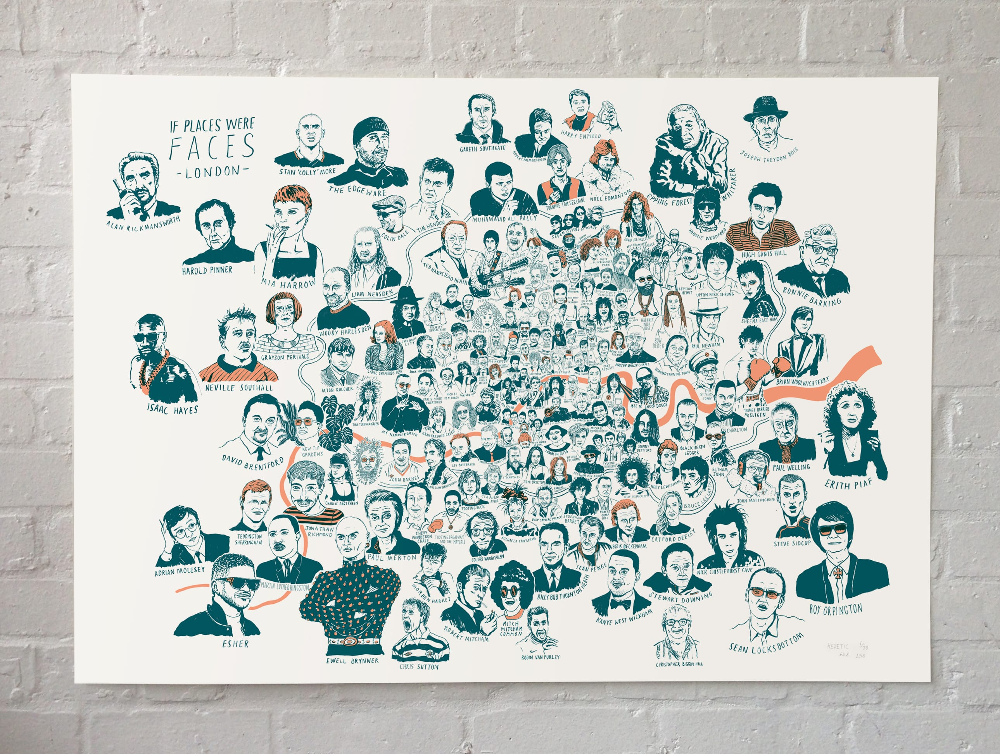

info
If Faces Were Places - London
£80+ p&p. Purchase print
...

6th edition, dark blue/grey & yellow/amber
Medium: 2 colour screen-print
Paper: 300gsm Munken Pure
Edition of 40
Dimensions: 72x102cm
Each print is hand signed and numbered by the artist
£80 + £10 Shipping Worldwide
PURCHASE PRINT
In London? Buy direct and collect from our studio in E8.
hereticprintmakers@gmail.com